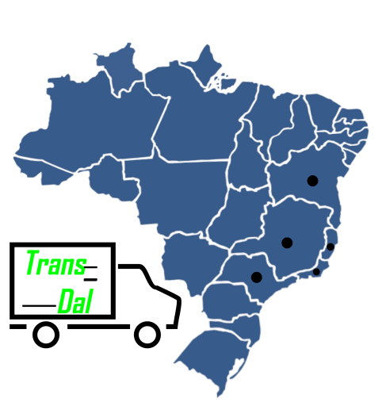

Sobre-nós
Estrutura
Contato
Orçamento
Trans_Dal
Especializada em alavancar o crescimento dos nossos clientes. Automatizando todo seu sistema de transporte.
Contate-nos»
Trabalhamos com os sistemas ( WMS | TMS )
Controle e verificação de entrada e saída de produtos.
Alocação dos itens.
Controle de portaria do estoque.
Otimização do picking.
Emissão de documentos concernentes a essa área.

Tornamos seu transporte
Mais rápido
Mais eficiente
Mais sustentável
Mais econômico
Conheça alguns clientes da Trans_Dal
Veja e siga o caminho de quem já trabalha conosco e encontre as melhores soluções logísticas.